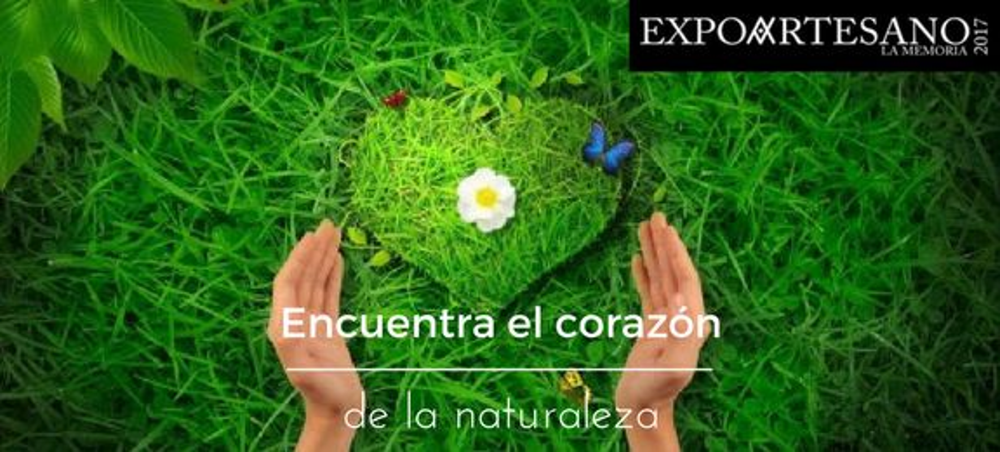
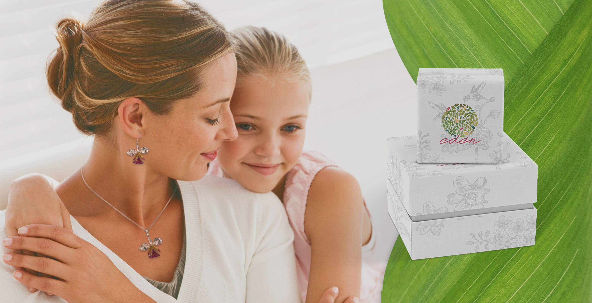

Con una lupa y unas pinzas, este artista de la miniatura detalla la pupila de una rana, el plumaje de un guacamayo, la oreja o el colmillo de un jaguar, las pintas de un gusano de seda, el aleteo del Martín Pescador en el instante en que atrapa su presa. Todas sus miniaturas oscilan entre tres y cinco centímetros.
Omar Oswaldo Hurtado Pérez (Monguí, Boyacá, 1966), dice que se ha pasado los últimos treinta años de su vida buscando la perfección de esta colección de medio centenar de joyas minúsculas fundidas en plata a una temperatura de diez grados bajo cero, y pintadas a mano.